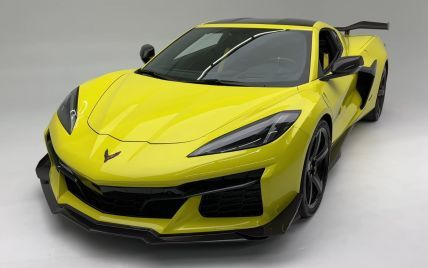
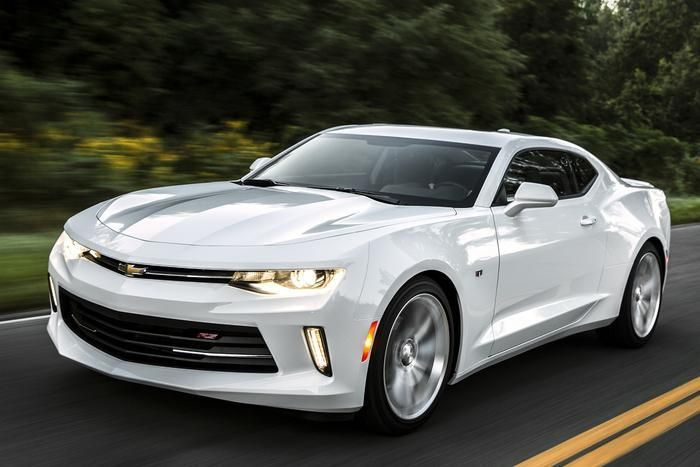

Chevrolet – это дочернее предприятие компании General Motors. История создания марки Chevrolet берет свое начало еще в ноября 1911 года. Ее основателем считается Уильям Дюрант, который, в свою очередь, предложил известному гонщику-инженеру Луи Шевроле, в честь которого в последствии и назвали марку, стать компаньоном. Компания Chevrolet располагается в США, штат Мичиган. А прямой специализацией фирмы является выпуск легковых и грузовых автомобилей. Выпуск первых моделей, в 1912 году, очень радовал создателей – ведь они были просто идеальными. Но эта радость была весьма недолгой. Потому как, цена первой модели – 2500 долларов – была достаточно дорогой, и потому не пользовалась спросом. Тогда Дюрант понял свою ошибку, и при создании авто, начал делать акцент на практичность и дешевизну. И вот в 1914 году были выпущены две модели попроще – легковой «Baby Grand» и спортивный «Royal Mail». Обе модели стали основой для создания «Chevrolet-490», которая принесла компании небывалую славу. Эта модель обошла даже популярный в то время «Ford T», который стоил несколько дешевле. С этого момента, предприятие начало выпуск более дешёвых и востребованных автомобилей. Именно на этих автомобилях, впервые и появилась эмблема марки Chevrolet символизирующая галстук «бабочка».
Что касается истории логотипа, то существует достаточное количество версий. Согласно одной из них, основатель компании, Уильям Дюрант, будучи в Париже остановился в гостинице. В номере, где он проживал, обратил внимание на обои с незамысловатым рисунком. Это его заинтересовало и Дюрант решил превратить этот рисунок в логотип марки. По другой же версии, Уильям якобы увидел этот рисунок в газетной рекламе. А вот еще один вариант, касаемо эмблемы, гласит о том, что Дюрант рисовал множество схем логотипа, одной из которых и была «бабочка».История Chevrolet – это по сути история соперничества с маркой Ford, ведь они практически одновременно появились на рынке. Одна из самых легендарных и популярных, даже на сегодняшний день, марок является Chevrolet Corvette, которая была выпущена в 1953 году. Существует интересная история, связанная с выпуском и появлением на рынке Мексики, модели «Chevrolet Nova». Автомобиль, к сожалению, не пользовалось успехом. Ведь в переводе «nova» означает «не движется». Тогда модель переименовали в «Caribe». Но это история скорее шуточная, нежели правдивая. Потому как, по правилам грамматики, это слово не употребляли в отношении к авто. Кроме того, в некоторых испанских диалектах, слово «nova», как раз означает «новое».Компания Chevrolet, во времена Второй мировой войны, активно занималась выпуском грузовиков, а также сопутствующей амуниции.
В послевоенное время, компания еще больше смогла закрепиться на мировом рынке. Так, в 1955 году, была выпущена модель «Bel Air», которая завоевала сердца многих американцев. В 1958 году, была создана и представлена в свет еще одно авто, которое стало знаменитостью – это был пикап «El Camino». И вот уже в начале 70- годов, компания производила около 3-х миллионов автомобилей в год. А к концу века, был выпущен стомиллионный экземпляр.Еще одна интересная информация касается рекламы Chevrolet в 70-х годах. Она звучала так: «Бейсбол, хот-доги, яблочный пирог и Шевроле». Правда не совсем ясно, что же имелось ввиду. В европейских странах марка стала широко известна в 2005 году. И вот уже к 2015 году, компания собирается прекращать выпуск моделей в Европе. Но эти изменения не затронут другие континенты.
 